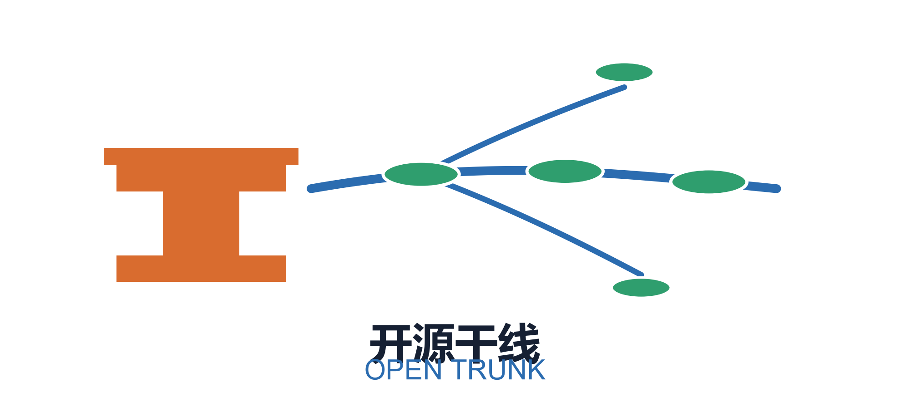
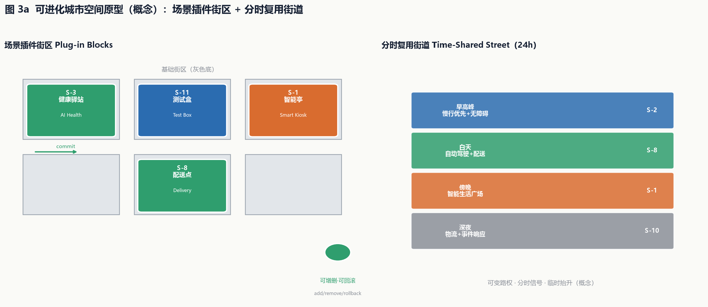
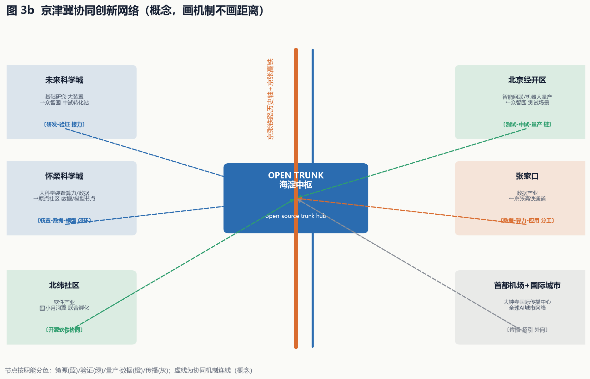
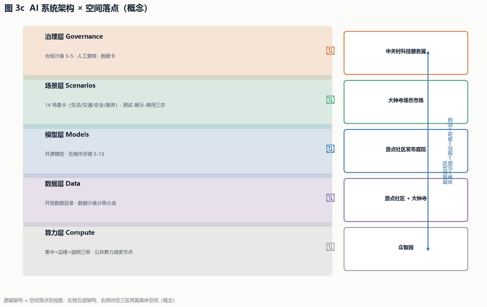

统筹研究范围
AI产业生态、三区两翼协同、未来城市形态与开源干线命名体系。

把京张铁路遗址公园当作一条可提交、可合并、可发布的城市主分支：一干三核两翼、多点提交。权威数据以 GeoJSON、metrics.json、矩阵与自检结果为准；本页为离线电子展示。
地图由提交几何派生：用地分区填色、重点区虚线约束、蓝绿公共空间叠加、道路廊道与三处核心节点标注。
统筹研究范围（43.6 km²，AI产业生态与三区两翼）、总体设计范围（11.4 km²，城市更新与控规深度）、重点区域范围（368.4 ha，详细设计）逐级落实。
AI产业生态、三区两翼协同、未来城市形态与开源干线命名体系。
用地结构、更新项目、交通市政、蓝绿公共空间与城市风貌。
众智园 / 原点社区 / 大钟寺三处重点片区详细设计。
每个重点区均为"定位 + 空间结构 + 建筑更新 + 交通慢行 + 公共空间 + AI 场景 + 实施风险"的可读小方案。
AI全栈自主创新体系与AI治理全球话语权；一轴两翼；全栈创新楼群+测试验证广场；AI模型评测/自动驾驶封闭测试。
世界级AI创新生态原点；原点广场-孵化街区-发布庭院；智能体贡献荣誉墙+开源成果展示廊；近校策源。
智能原生新业态；四象限步行连通+中央场景市场；智能生活广场+低速配送；大钟寺站一体化。
中关村科技服务翼承载资本-数据-合规-国际化服务；小月河场景赋能翼组织场景测试-体验-示范链。
开源合规沙盒（S-5）、智能体招商与企业服务 Copilot（S-9）、国际传播与招引转化中心；对应 constraints CON-002 概念研究界。
滨水场景实验室链：机器人低速配送（S-8）、数字孪生公园导览（S-7）、公共安全事件响应（S-10）；对应 constraints CON-003 概念研究界。
知春路、北五环南侧、大钟寺三条横向联系道缝合两翼与开源干线主轴。
三条时间轴在同一干线交汇：历史轴（铁路干线）、创新轴（中关村干线）、未来轴（AI 干线），以"一干串三轴"导视系统表达。
京张原点 → 中关村节点 → 开源发布场，与 PR 广场-发布广场-测试验证广场公共空间序列同构。
"OPEN TRUNK: where a century-old railway becomes an open-source city"，物料标注概念建议与署名。
可进化城市空间原型、京津冀协同创新网络、AI 系统架构——把文字中的核心创新落成可视化证据。
场景插件街区（可增删/回滚）+ 分时复用街道（24h 可变路权）。
画机制不画距离：研发-验证接力、装置-数据-模型闭环、测试-中试-量产链。
算力-数据-模型-场景-治理五层架构，逐层对应三区两翼空间。



每张场景卡映射服务对象、空间位置、隐私边界、人工复核、运营主体与标准场景 ID；未成熟技术不表述为已可全面部署。
大钟寺站/原点社区站，行程数据最小化
遗址公园主轴，位置数据脱敏
居住组团，医疗数据本地化+人工复核
原点社区，学习数据脱敏
中关村翼，法律文书人工复核
公共服务中心，政务数据权限管控
遗址公园，匿名化
大钟寺/居住区，轨迹数据最小化
中关村翼，企业数据授权
全带，视频数据合规+人工复核
众智园，测试验证场景
众智园北侧，测试验证场景
原点社区，测试验证场景
原点社区发布广场，测试验证场景
compliance_matrix.json 覆盖公告 1.3/1.4/1.5 与 agent.1-agent.6；standard_matrix.json 覆盖全部 mandatory 标准；design_depth_matrix.json 15/15 complete。
官方公告、agent 任务书、本地标准参考快照、data/source_registry.json、provisional 边界。
待补：官方边界、控规条件（容积率/高度/退线）、现状建筑权属、市政容量、高校权属清权。
一期「先导提交」（原点社区）→ 二期「主线合并」（众智园）→ 三期「全链发布」（大钟寺），对应 phasing.geojson。
开源干线慢行主轴贯通、原点社区孵化街区更新、智能体贡献荣誉墙。
众智园全栈研发楼群、测试验证广场、AI模型评测与自动驾驶测试。
大钟寺场景市场、四象限步行连通、小月河场景赋能翼。
本地自检结果：spatial review PASS、professional evidence review PASS、visual packaging 通过（本页离线静态）。provisional 边界为 intake 状态。
land-use 完整覆盖无缝隙重叠；专业证据引用完整；标准与深度矩阵全覆盖。
官方边界与控规条件发布后需重算几何、指标与图纸；正式专业评分依赖官方多边形。